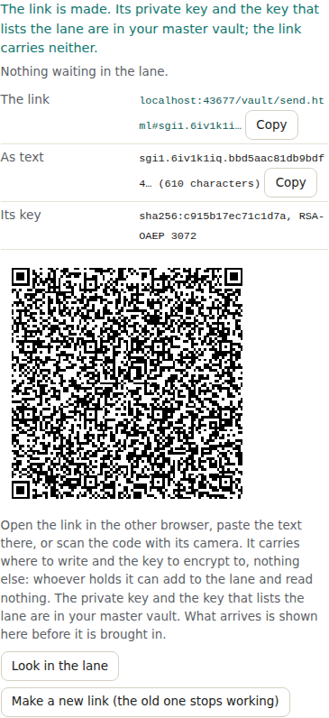
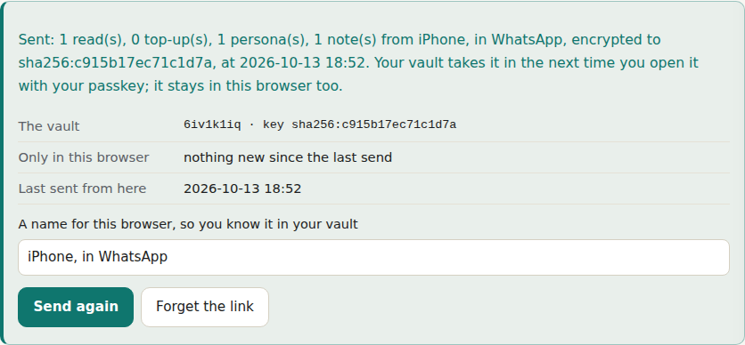
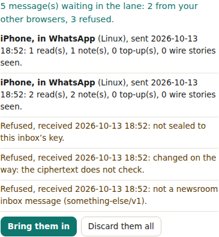

Home / About / Engineering / 049: Send to my vault from any browser: an inbox lane on the reader vault, a link three ways, and the drain
Engineering · done
049: Send to my vault from any browser: an inbox lane on the reader vault, a link three ways, and the drain
Send to my vault from any browser: an inbox lane on the reader vault, a link three ways, and the drain
| Id | 049 |
| Status | done |
| Kind | Story |
| Priority | high |
| Created | 2026-10-13T18:45:00Z |
| Source | the owner, in the article "Sixteen notes I did not want to lose" (No. 105, v0.12.23), its brief for the session that builds the vault pane, and in chat on 13 October 2026, "look at this feature request |
| Release | v0.12.26 |
| Effort | large |
| File | admin/engineering/issues/done/049-send-to-my-vault-from-any-browser.md |
What is asked
On an iPhone, in a browser that could not reach the passkeys, the Vault button said sixteen changes existed only in that browser. The owner wanted them, and the recovery code is too much power to type into a browser that is not trusted, for a job that only needs to add. The brief, in six steps: a key pair for the reader, the private half in the master; an append lane on the reader vault, its token in the master; the link three ways (URL, text, QR) carrying the lane address, the append token and the public key, nothing else; the sender's side, which encrypts the pending records and appends them; the drain, on unlock, which says what arrived and from which browser and merges it on one press, keeping the sender as the author; and tests. With care for: a rotatable token, the drain showing what arrived before it merges, and a link that can expire.
Scenario
Given my vault is open with my passkey
When I press "Make a link for another browser" in the Vault tab
Then a key pair is made in this browser, an append lane is configured on my reader vault, and both are recorded in my master
And the link is shown as a URL, as text and as a QR code, carrying the lane, the append token and the public key, and nothing else
Given a browser with no passkey opens the link
Then it keeps the link, takes it out of the address, and says which vault and key it will send to and what it holds that the vault does not
When I press "Send to my vault"
Then its own records are written as one device file, sealed to the key in the link, and appended to the lane
And the count of what is only in this browser goes to zero, and nothing is removed from it
And on any page after that, the strip above the pane offers "Send to my vault"
Given messages are waiting in the lane
When I open my vault
Then the Vault tab lists them: from which browser, when, and what each carries
And a message sealed to another key, changed on the way, or not a newsroom inbox message is refused, with its reason
When I press "Bring them in"
Then each browser's records are written into the reader vault as its device file, the lane is marked, and they are merged here with that browser as their author
When I press "Make a new link"
Then the lane takes the new token only, and the old link can no longer writeMock-up
In the Vault tab, under Across your devices: Send from another browser, with what is waiting in the lane first, then the link (shortened, with Copy), the text (with Copy), the key's fingerprint, the QR code, and two buttons, Look in the lane and Make a new link. The sending page, vault/send.html: the vault and key, what is only in this browser, a name for it, Send to my vault and Forget the link.
Outcome
Shipped in v0.12.26.
- The cryptography is the one this site already uses to write to sgit.ai's subscribe lane: sgit's hybrid envelope v2, AES-256-GCM wrapped with RSA-OAEP, here to a 3072-bit key made in the reader's browser (
assets/vault-pane/inbox.js). 3072 rather than the CLI's 4096 keeps the link at about 650 characters and the QR code at 89 modules, which a phone camera reads off a screen. - The lane is on the reader vault, configured with its write key and the access key from the master (
POST /api/vault/append/configure). The enum key is a random value kept in the master; the server keeps its hash. - The message is a device file, in the format the vault already uses (
assets/vault-pane/sync.js), so the drain writes it into the reader vault as that browser's file (combined with any earlier one,combine()) and the usual merge brings it in. The sending browser is a device like any other, a row across the devices. - Refused, not merged: a message sealed to another key, one whose ciphertext was changed (AES-GCM fails), one that opens but is not a newsroom inbox message for this key, one whose browser id is not a file name or whose notes claim another browser. They are listed with the reason and can be discarded.
- The sender (
vault/send.html,assets/vault-pane/send.js) needs no passkey and no vault library: it keeps the link in local storage, takes it out of the address, and only ever calls the lane's write route. - A new link keeps the key and changes the token; configure replaces the anchors, so the old token is refused. It waits until the lane is empty, so no message is stranded in an old lane.
Not built: expiry. The append routes have no expiry on a token, so a date in the link would only be advisory, honoured by this page and by no one else; a new link is the revocation that the server enforces. Signatures: anyone holding the link can write, as the brief says; the drain shows what arrived, from which browser, before it is brought in. Purge of processed files, which needs the write key and the access key and is left to a later release. The reply lane (card 015) can use the same machinery.
Screenshots



For an agent
Issue 049 on newsroom.sgit.ai: Send to my vault from any browser: an inbox lane on the reader vault, a link three ways, and the drain. Status done, kind story, priority high, release v0.12.26. Source file admin/engineering/issues/done/049-send-to-my-vault-from-any-browser.md.